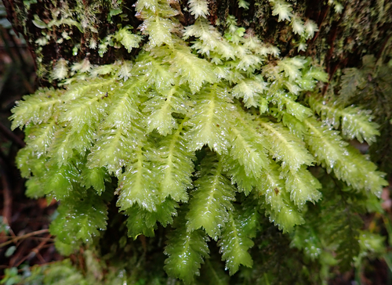

Perssoniellaceae
No widely accepted common name
Perssoniellaceae is a rare, monotypic family of leafy liverworts (order Jungermanniales, suborder Perssoniellineae), endemic to New Caledonia. It contains only Perssoniella vitreocincta, characterized by complicate-bilobed leaves lacking a wing/keel but possessing a unique hyaline border of slime papillae, and large underleaves.
Overview
Perssoniellaceae is a highly unique and geographically restricted family, containing just a single species, Perssoniella vitreocincta, known only from the island of New Caledonia in the Pacific. It belongs to the leafy liverwort order Jungermanniales and is considered the sole member of the suborder Perssoniellineae alongside its sister family, the much larger Schistochilaceae.
Perssoniella is typically found growing as an epiphyte on tree bark or branches in humid montane forests. Like its relatives in Schistochilaceae, it possesses complicate-bilobed leaves (folded into dorsal and ventral lobes) and large underleaves. However, it crucially lacks the wing or keel along the leaf fold that characterizes most Schistochilaceae. Instead, Perssoniella possesses another remarkable feature: a distinctive border of enlarged, clear (hyaline) slime papillae along the margins of its leaves and underleaves. This combination of features clearly defines this rare endemic family.
Quick Facts
- Scientific Name: Perssoniellaceae R.M.Schust. ex Grolle
- Common Name: (None)
- Number of Genera: 1 (Perssoniella)
- Number of Species: 1 (Perssoniella vitreocincta)
- Distribution: Endemic to New Caledonia. Epiphytic in humid montane forests.
- Evolutionary Group: Bryophytes - Liverworts (Marchantiophyta) - Jungermanniopsida - Jungermanniales - Perssoniellineae
Key Characteristics
Note: Perssoniellaceae are leafy liverworts closely related to Schistochilaceae but with key differences.
Gametophyte (Leafy Shoot) Structure
The dominant phase is the leafy gametophyte:
- Form: Likely robust shoots, creeping or ascending. Coloration possibly greenish to brownish.
- Stems: Relatively stout.
- Leaves: Arranged in two lateral rows, complex.
- Structure: Leaves are complicate-bilobed, folded into a larger dorsal lobe and a smaller ventral lobe.
- Wing/Keel: Distinctly absent along the keel (fold line) - a key difference from Schistochilaceae.
- Hyaline Border: Margins of leaf lobes are characteristically bordered by a row of enlarged, clear (hyaline) slime papillae ('vitreocincta' means 'glass-bordered').
- Insertion: Leaf insertion likely transverse to succubous.
- Cells: Walls may be thickened.
- Underleaves: Present and large, typically bilobed, and also possessing the hyaline marginal border of slime papillae.
- Branching: Information may be limited; likely intercalary.
Reproductive Structures
Likely dioicous (details may be scarce due to rarity).
- Antheridia: Male organs likely borne in the axils of specialized bracts (androecia).
- Archegonia: Female organs are likely terminal on shoots or branches, enclosed within a well-developed perianth. The perianth is described as laterally compressed and possibly similar in form to that of Schistochilaceae (e.g., keeled, pleated near the mouth), but details might be based on limited observations.
Sporophyte
The sporophyte develops within the perianth (details may be poorly known):
- Foot: Embedded in the stem apex tissue.
- Seta: Likely elongates considerably at maturity.
- Capsule: Likely ovoid/ellipsoid, dehiscing via 4 valves. Capsule wall likely multistratose.
Spores and Elaters
Contained within the capsule.
- Spores: Details may be limited but likely typical for the group.
- Elaters: Present, aiding spore dispersal.
Field Identification
Identifying Perssoniellaceae (Perssoniella) requires careful observation of leaf details and knowledge of its restricted distribution. Finding this plant is extremely unlikely outside of its specific habitat in New Caledonia.
Primary Identification Features (Microscope Likely Needed)
- Complicate-Bilobed Leaves (No Wing/Keel): Leaves folded into two lobes, but lacking the extra wing found in Schistochila.
- Hyaline Marginal Border: Presence of a distinct border of clear, enlarged slime papillae along the margins of leaves and underleaves. This is highly diagnostic.
- Large Underleaves: Conspicuous underleaves, often bilobed, also with the hyaline border.
- Endemic Distribution: Found ONLY in New Caledonia.
- Habitat: Epiphytic in humid montane forests.
- Perianth (if fertile): Large, laterally compressed perianth.
Secondary Identification Features
- Robust Habit: Likely relatively large plants.
- Leaf Insertion: Transverse to succubous.
Seasonal Identification Tips
- Year-round: Vegetative features should be present year-round in its humid habitat.
- Rarity: Finding the plant at all is the main challenge. Reproductive structures may be seasonal but are poorly documented.
Common Confusion Points
Within its restricted range (New Caledonia), Perssoniella might be confused with:
- Schistochila species (Schistochilaceae): Closely related and potentially similar in size and habit, but Schistochila species possess the characteristic wing or keel along the leaf fold, which Perssoniella lacks. Schistochila also lacks the hyaline border of slime papillae.
- Other large leafy liverworts in New Caledonia: Genera from families like Plagiochilaceae or Lepidoziaceae might occur nearby but will differ significantly in leaf structure (e.g., not complicate-bilobed, different insertion, different underleaves) and lack the hyaline border.
Key differentiator: The combination of complicate-bilobed leaves WITHOUT a wing/keel + hyaline border of slime papillae + large underleaves + New Caledonian epiphytic habitat is unique to Perssoniella.
Field Guide Quick Reference (Specialized)
Look For:
- Robust leafy epiphyte (New Caledonia)
- Leaves folded (complicate-bilobed)
- NO wing/keel on leaf fold
- Distinct hyaline border on leaf/underleaf margins
- Large underleaves present
- Laterally compressed perianth (if fertile)
Key Distinctions:
- Lacks wing/keel (unlike Schistochila)
- Has unique hyaline border (unlike Schistochila, others)
- Endemic to New Caledonia
Notable Examples
The family is monotypic, containing only one known species.

Perssoniella vitreocincta
(Perssoniella)
The sole representative of the family, endemic to the humid montane forests of New Caledonia. It is characterized by its complicate-bilobed leaves lacking a wing but possessing a unique marginal border of hyaline slime papillae, and large underleaves. Its rarity and unique features make it evolutionarily significant.
Phylogeny and Classification
Perssoniellaceae occupies a crucial position in understanding the phylogeny of the Jungermanniales. It contains only Perssoniella vitreocincta and forms the suborder Perssoniellineae together with its sister family, Schistochilaceae. Molecular and morphological data strongly support this sister relationship. Perssoniellaceae represents the lineage that diverged before the evolution of the characteristic wing/keel found in Schistochilaceae, but shares the fundamental complicate-bilobed leaf structure and large underleaves.
The presence of the unique hyaline border of slime papillae is an autapomorphy (unique derived character) of Perssoniella. Its existence as a monotypic family endemic to New Caledonia suggests it may be a relictual lineage, preserving features ancestral to the Perssoniellineae clade while also possessing its own unique specializations. Its study is vital for understanding character evolution (like the leaf wing) within this major group of leafy liverworts.
Position in Plant Phylogeny
- Kingdom: Plantae
- Division: Marchantiophyta (Liverworts)
- Class: Jungermanniopsida
- Order: Jungermanniales
- Suborder: Perssoniellineae
- Family: Perssoniellaceae
Evolutionary Significance
Perssoniellaceae is highly significant for:
- Sister Group Relationship: Provides a crucial comparison point for understanding the evolution of features within its sister family, Schistochilaceae, particularly the origin of the leaf wing/keel.
- Phylogenetic Anchor: Helps define the suborder Perssoniellineae and understand its position within the broader Jungermanniales.
- Biogeography and Endemism: Its status as a monotypic endemic family in New Caledonia highlights the island's importance as a center of unique bryophyte diversity and potential refugium for ancient lineages.
- Morphological Novelty: The hyaline border of slime papillae represents a unique structural feature among liverworts.